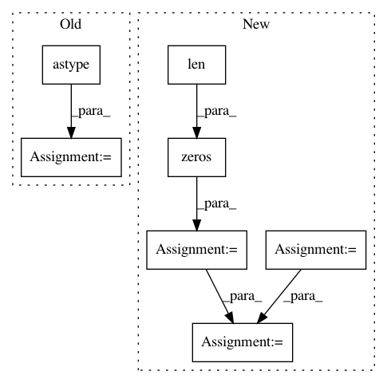

3526a6d7d5005d0cb126a39c894ad7f46b441260,category_encoders/one_hot.py,OneHotEncoder,get_dummies,#OneHotEncoder#Any#Any#,269
Before Change
for column_mapping in mod:
new_col_name = column_mapping["new_col_name"]
val = column_mapping["val"]
X[new_col_name] = (X[col] == val).astype(int)
new_columns.append(new_col_name)
old_column_index = cols.index(col)
cols[old_column_index: old_column_index + 1] = new_columns
After Change
base_matrix = np.eye(N=len(mod), dtype=np.int)
index = []
new_columns = []
for column_mapping in mod:
new_col_name = column_mapping["new_col_name"]
val = column_mapping["val"]
index.append(val)
new_columns.append(new_col_name)
base_df = pd.DataFrame(data=base_matrix, columns=new_columns, index=index)
if self.handle_unknown == "value":
base_df.loc[-1] = np.zeros(len(mod))
base_df = base_df.loc[X[col]]
base_df.set_index(X.index, inplace=True)
X = pd.concat([base_df, X], axis=1)
old_column_index = cols.index(col)
cols[old_column_index: old_column_index + 1] = new_columns
In pattern: SUPERPATTERN
Frequency: 3
Non-data size: 7
Instances
Project Name: scikit-learn-contrib/categorical-encoding
Commit Name: 3526a6d7d5005d0cb126a39c894ad7f46b441260
Time: 2018-11-17
Author: jcastaldo08@gmail.com
File Name: category_encoders/one_hot.py
Class Name: OneHotEncoder
Method Name: get_dummies
Project Name: keras-team/autokeras
Commit Name: 71432d1890209628e189edf04d7d623160943718
Time: 2019-12-18
Author: 33369174+Davidsirui@users.noreply.github.com
File Name: autokeras/hypermodel/preprocessor.py
Class Name: TextToNgramVector
Method Name: transform